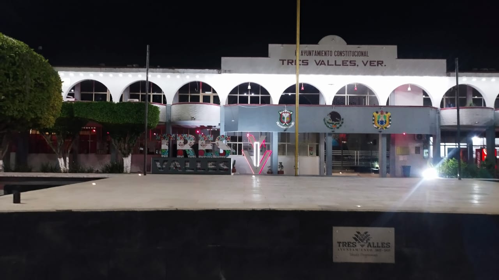
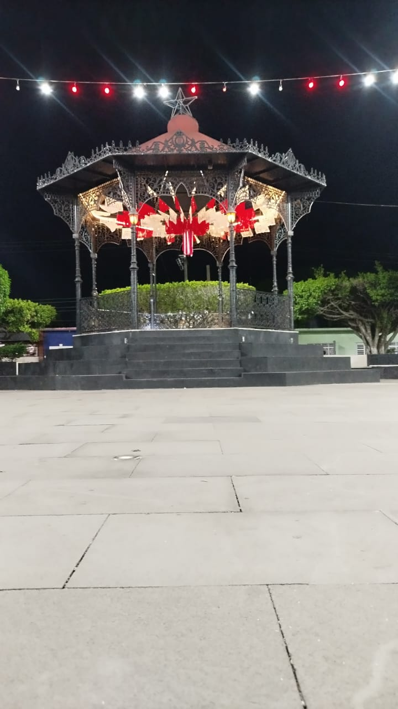
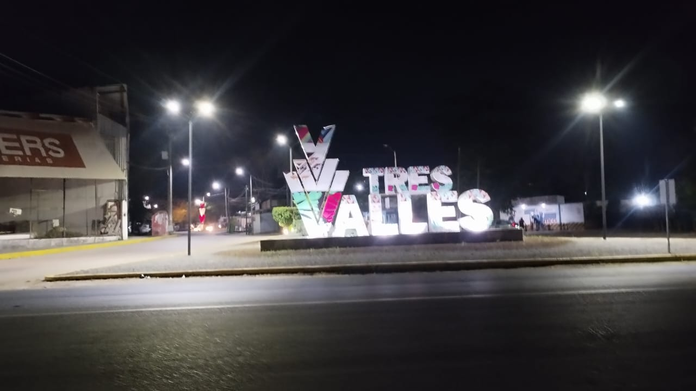

En esta seccion podras encontrar algunos de los lugares que deberias conocer de Tres Valles.
Estos son algunos de los lugares mas llamativos que hay en Tres valles.

Este es el ayuntamiento constitucional de Tres valles, Ver.
Se ubica en el centro de Tres Valles, aqui tambien se encuentra el parque de Tres Valles, en este lugar se organizan diferentes tipos de eventos como:
bailes folcloricos, conciertos musicales, eventos escolares, ferias, etc.
Este es el kiosko de el ayuntamiento de Tres Valles, Ver.
Este lugar es decorado segun la temporada, navidad, dia de muertos, dias historicos, etc.
Este lugar igualmente esta ubicado en el parque de Tres Valles
Este es el tanque de agua de Tres Valles, Ver.
En este lugar las personas pueden venir a sentarse por la noche o caminar despues de un largo dia, cuenta con iluminacion y una maravillosa pintura en la estructura del tanque

Letras de Tres Valles, Ver.
Estas letras se encuentran en la entrada principal de Tres Valles.
Es un buen lugar para tomarse una foto y recordar este maravilloso municipio